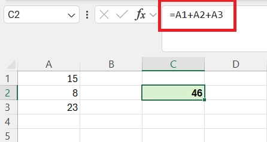
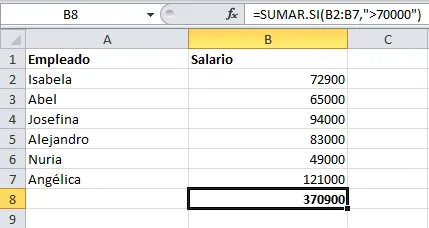
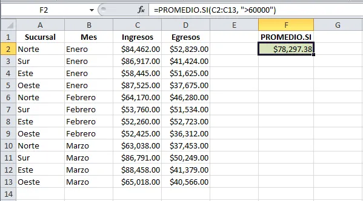
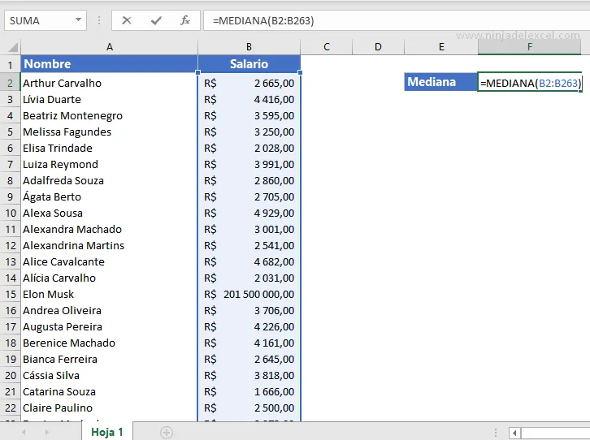
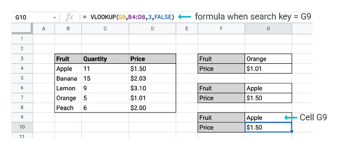
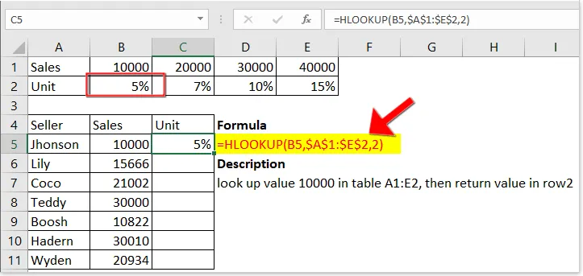
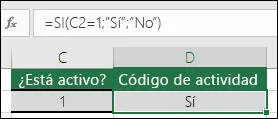
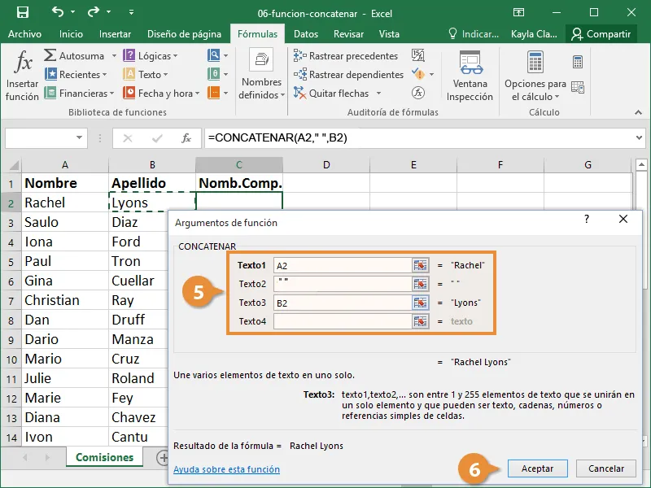

TECNOLOGÍA E INFORMÁTICA
Las funciones de Excel son fórmulas predefinidas que permiten realizar cálculos y manipular datos de manera eficiente en hojas de cálculo. Estas funciones pueden ayudar en diversas tareas, como sumar, promediar, buscar información, contar elementos, y realizar operaciones lógicas.
Tipos de funciones en Excel:
1. Función Matemáticas y Trigonométricas:
SUMA: Suma un rango de celdas.

PRODUCTO: Multiplica los valores de un rango

2. Funciones Estadísticas:
PROMEDIO: Calcula el promedio de un conjunto de números.

MEDIANA: Encuentra el valor central de un conjunto de datos.

3. Funciones de Búsqueda y Referencia:
VLOOKUP (BUSCARV): Busca un valor en la primera columna de una tabla y devuelve un valor en la misma fila desde otra columna.

HLOOKUP (BUSCARH): Similar a VLOOKUP, pero busca en filas.

4. Funciones Lógicas:
SI: Permite realizar una comparación lógica y devuelve un valor si es verdadero y otro si es falso.

Y / O: Evalúan múltiples condiciones lógicas.

Funciones de Texto:
CONCATENAR: Une varios textos en una sola celda.

Uso de las funciones:
Las funciones se utilizan ingresando su nombre seguido de paréntesis que contienen los argumentos necesarios. Por ejemplo:
=SUMA(A1:A10)
A continuación una explicación de cuatro de estas funciones con más detalles: